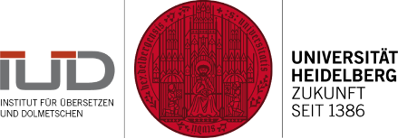

English tags German tags
German health podcasts (demo corpus, 150k words)
German European Medicines Agency corpus, 5MW, aligned with English EMEA corpus
English European Medicines Agency corpus, 5MW, aligned with German EMEA corpus
Dickens
German Law
Default: word lemma
CQP syntax only (Examples)
Getting help
|

|